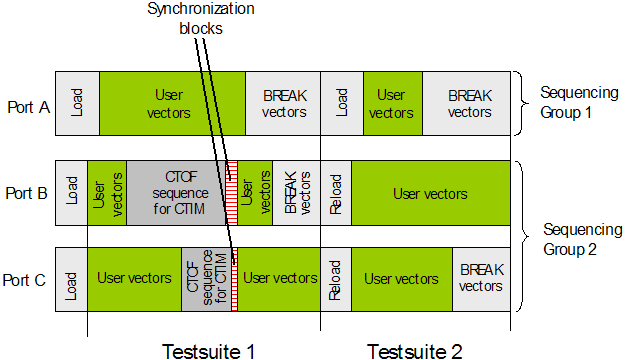

De-coupling ports by separate sequencing groups
When two ports belong to the same sequencing group, their port bursts must contain the same total number of timing and level set changes (see Sequencing groups and pattern structure). But there are applications, for example a continuous clock setup (see Continuous Clock Setup), where this can be unacceptable.
In this case you must put the ports having a different number of timing or level set changes into different sequencing groups. Ports belonging to different sequencing groups are completely independent of each other with respect to the number of CTOF sequences.
The drawback of this independence is that ports in different sequencing groups cannot be exactly synchronized. Their CTOF synchronization points are always at different system clock edges. A partial synchronization is, however, possible, see Phase synchronization across sequencing groups.
Example
The following figure shows two testsuites for three ports belonging to two sequencing groups:

Observe the following points in the figure:
- The start of the user vectors in Sequencing Group 1 and Sequencing Group 2 is not simultaneous.
- In contrast to Port A, the two ports of sequencing group 2 contain an additional CTIM instruction in the first testsuite.
- Port A in Sequencing Group 1 waits for Port B and Port C in Sequencing Group 2 to finish their user vectors before the second testsuite starts.
Functional changes
- Introduced before SmarTest 6.3.2